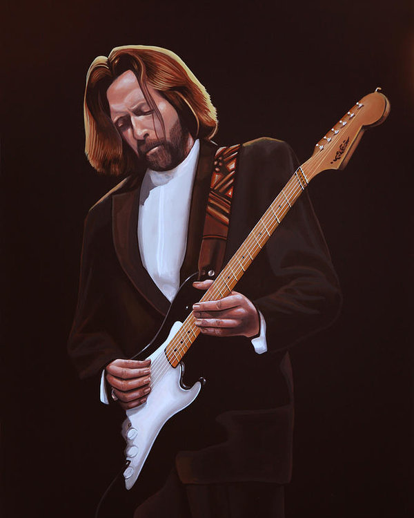

Who is Eric Clapton?
Eric Patrick Clapton was born on 30 March 1945 in his grandparents’ home at 1 The Green, Ripley, Surrey, England. He was the son of 16-year-old Patricia Molly Clapton (b. 7 January 1929, d. March 1999) and Edward Walter Fryer (b. 21 March 1920, d. 1985), a 24-year-old Canadian soldier stationed in England during World War II. Before Eric was born, Fryer returned to his wife in Canada. It was extraordinarily difficult for an unmarried 16-year-old to raise a child on her own in the mid-1940s. Pat’s parents, Rose and Jack Clapp, stepped in as surrogate parents and raised Eric as their own. Thus, he grew up believing his mother was his sister. His grandparents never legally adopted him, but remained his legal guardians until 1963. Eric’s last name comes from Rose’s first husband and Pat’s father, Reginald Cecil Clapton (d. 1933).
